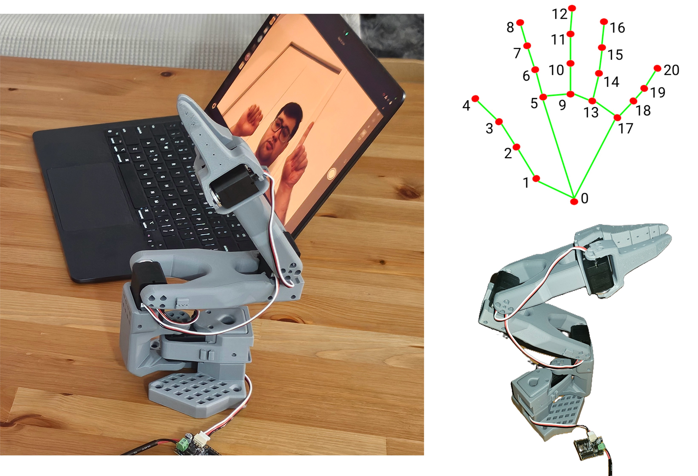

Project Overview
This project is a ROS2–based teleoperation system that allows an operator to control a robot arm using only hand gestures captured through a webcam. The system uses Google's MediaPipe framework for real-time hand tracking and translates natural hand movements into joint-level robot commands — no specialized hardware or wearable sensors required.
The architecture is built around two ROS 2 nodes working in tandem. A gesture detection node reads the webcam feed, identifies left and right hands, and publishes structured gesture commands to ROS topics. A separate arm controller node subscribes to these commands and drives the robot's joints accordingly. The left hand selects which joint to control by raising a specific number of fingers, while the right hand issues directional commands through a fist gesture combined with vertical motion.
The system was designed with modularity in mind — the gesture recognition pipeline, finger counting logic, and motor control interface are separated into independent Python modules, making it straightforward to swap in different robot backends or extend the gesture vocabulary. A calibration routine allows the operator to set a neutral reference point, and all key parameters (detection confidence, dead-zone thresholds, step sizes) are configurable through a YAML file without modifying any code.
Key Technical Achievements:
• Built a modular ROS2 package with separate gesture detection and arm
control nodes communicating over standard ROS topics.
• Integrated MediaPipe hand tracking for real-time finger counting and
directional gesture recognition from a single webcam.
• Designed a two-hand control scheme: left hand for joint selection,
right hand for motion commands — enabling intuitive multi-joint control.
• Implemented runtime calibration and YAML-based parameter tuning for
deployment flexibility across different setups.